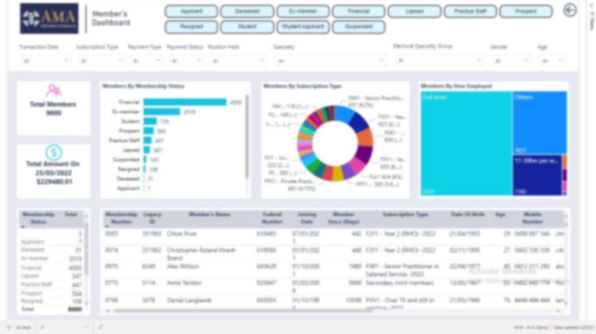
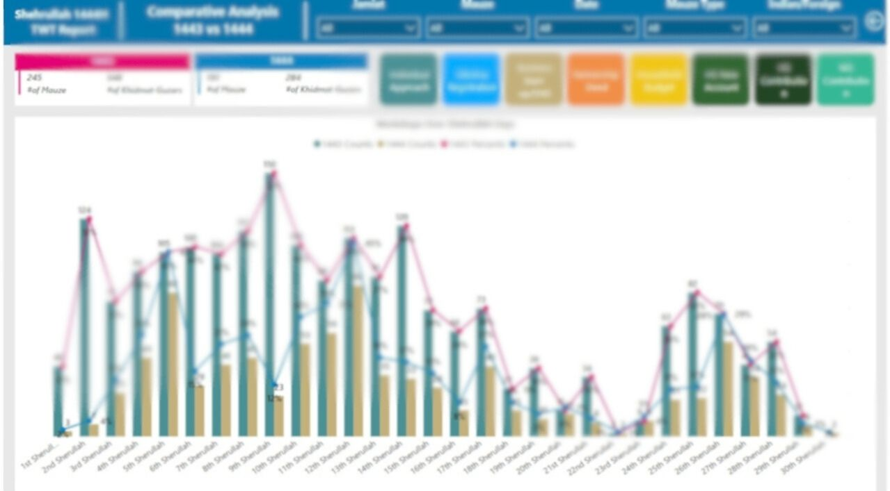

Mohammed Kothambawala
PowerBI Lead Developer
Microsoft Certified Data Analyst
An experienced Business Intelligence professional with over 4 years of experience in Microsoft Power BI.
Copied below are samples of few of the Dashboards.
Get Started

